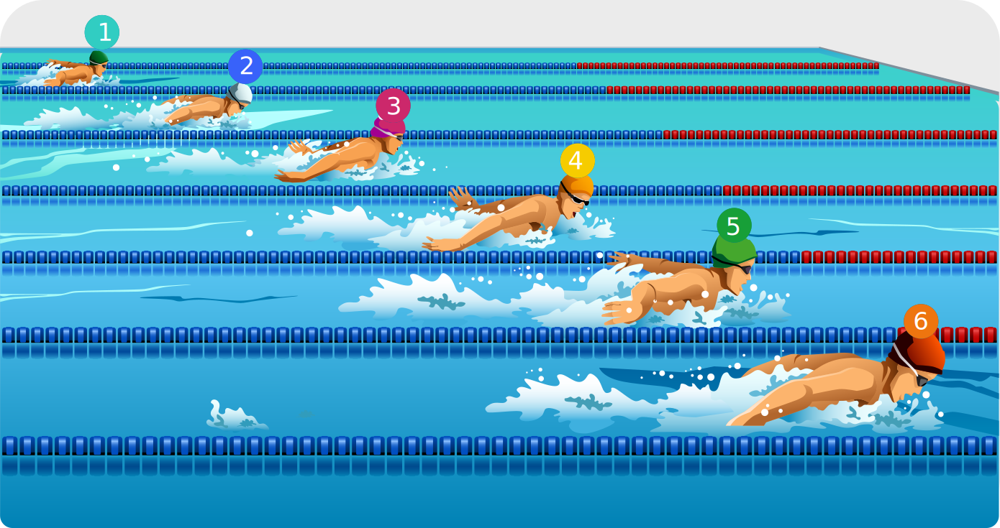

Ruta para la planeación inversa de la evaluación de los aprendizajes
Criterios de evaluación
Metodología de aprendizaje
Evidencias de aprendizaje
Técnicas e instrumentos de evaluación

Estrategias de retroalimentación y proalimentación
Siguiente